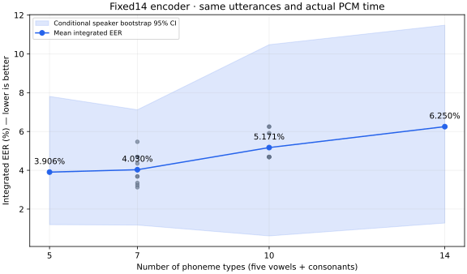

同じ固定14音素モデル・同じ発話・同じ実使用時間。5母音を起点に子音を増やす比較。
7/10種類は、事前指定した9組合せの統合EERの平均です。

| 種類数 | 組合せ | 通常文EER | 95% CI | 組合せ範囲 | FAR | FRR | 別テキストEER |
|---|---|---|---|---|---|---|---|
| 5 | 1 | 3.906% | [1.198, 7.808] | 3.906%〜3.906% | 2.121% | 7.812% | 3.571% |
| 7 | 9 | 4.030% | [1.177, 7.120] | 3.125%〜5.469% | 2.517% | 7.292% | 5.886% |
| 10 | 9 | 5.171% | [0.617, 10.475] | 4.688%〜6.250% | 1.699% | 8.333% | 6.548% |
| 14 | 1 | 6.250% | [1.282, 11.477] | 6.250%〜6.250% | 1.116% | 9.375% | 8.333% |
主比較14−5：+2.344 pp、95% CI [-1.628, 6.061] pp
対象発話数：{"validation": {"raw_common14": {"cross_text_verification": 4, "verification": 76}, "excluded": {"cross_text_verification/missing_phone": 446, "cross_text_verification/no_legal_common_budget": 2, "verification/missing_phone": 674, "verification/no_legal_common_budget": 11}, "roles": {"cross_text_verification": 2, "verification": 65}, "by_speaker": {"verification": {"jvs007": 4, "jvs016": 5, "jvs021": 4, "jvs025": 3, "jvs026": 6, "jvs040": 6, "jvs042": 5, "jvs045": 5, "jvs053": 3, "jvs058": 5, "jvs068": 4, "jvs070": 5, "jvs075": 3, "jvs077": 4, "jvs079": 3}, "cross_text_verification": {"jvs016": 1, "jvs045": 1}}, "selection_uses_embeddings": false}, "test": {"raw_common14": {"cross_text_verification": 14, "verification": 74}, "excluded": {"cross_text_verification/missing_phone": 436, "cross_text_verification/no_legal_common_budget": 2, "verification/missing_phone": 676, "verification/no_legal_common_budget": 10}, "roles": {"cross_text_verification": 12, "verification": 64}, "by_speaker": {"verification": {"jvs003": 4, "jvs005": 4, "jvs006": 3, "jvs010": 5, "jvs015": 5, "jvs017": 6, "jvs024": 4, "jvs029": 3, "jvs030": 3, "jvs032": 6, "jvs048": 3, "jvs064": 6, "jvs065": 5, "jvs076": 3, "jvs081": 4}, "cross_text_verification": {"jvs017": 1, "jvs024": 2, "jvs029": 1, "jvs030": 1, "jvs064": 1, "jvs065": 4, "jvs076": 2}}, "selection_uses_embeddings": false}}
| 条件 | 種類数 | 音素 | 発話 | 件数 | 話者数 | EER | FAR | FRR |
|---|---|---|---|---|---|---|---|---|
| p5 | 5 | a i u e o | verification | 64 | 15 | 3.906% | 2.121% | 7.812% |
| p5 | 5 | a i u e o | cross_text_verification | 12 | 7 | 3.571% | 4.167% | 0.000% |
| p14 | 14 | a i u e o m n t d k g s z h | verification | 64 | 15 | 6.250% | 1.116% | 9.375% |
| p14 | 14 | a i u e o m n t d k g s z h | cross_text_verification | 12 | 7 | 8.333% | 1.190% | 8.333% |
| p7_o0 | 7 | a i u e o t k | verification | 64 | 15 | 4.688% | 4.018% | 4.688% |
| p7_o0 | 7 | a i u e o t k | cross_text_verification | 12 | 7 | 8.333% | 5.952% | 8.333% |
| p7_o1 | 7 | a i u e o k h | verification | 64 | 15 | 5.469% | 2.344% | 10.938% |
| p7_o1 | 7 | a i u e o k h | cross_text_verification | 12 | 7 | 4.762% | 1.190% | 8.333% |
| p7_o2 | 7 | a i u e o z h | verification | 64 | 15 | 4.353% | 2.121% | 10.938% |
| p7_o2 | 7 | a i u e o z h | cross_text_verification | 12 | 7 | 1.190% | 1.190% | 0.000% |
| p7_o3 | 7 | a i u e o g z | verification | 64 | 15 | 3.683% | 1.451% | 9.375% |
| p7_o3 | 7 | a i u e o g z | cross_text_verification | 12 | 7 | 1.190% | 1.190% | 0.000% |
| p7_o4 | 7 | a i u e o g s | verification | 64 | 15 | 3.683% | 1.451% | 10.938% |
| p7_o4 | 7 | a i u e o g s | cross_text_verification | 12 | 7 | 8.333% | 1.190% | 8.333% |
| p7_o5 | 7 | a i u e o d s | verification | 64 | 15 | 3.125% | 2.344% | 3.125% |
| p7_o5 | 7 | a i u e o d s | cross_text_verification | 12 | 7 | 8.333% | 4.167% | 8.333% |
| p7_o6 | 7 | a i u e o m d | verification | 64 | 15 | 3.348% | 2.902% | 6.250% |
| p7_o6 | 7 | a i u e o m d | cross_text_verification | 12 | 7 | 8.333% | 2.381% | 8.333% |
| p7_o7 | 7 | a i u e o m n | verification | 64 | 15 | 3.237% | 2.567% | 4.688% |
| p7_o7 | 7 | a i u e o m n | cross_text_verification | 12 | 7 | 4.762% | 2.381% | 8.333% |
| p7_o8 | 7 | a i u e o n t | verification | 64 | 15 | 4.688% | 3.460% | 4.688% |
| p7_o8 | 7 | a i u e o n t | cross_text_verification | 12 | 7 | 7.738% | 5.952% | 8.333% |
| p10_o0 | 10 | a i u e o t k g z h | verification | 64 | 15 | 4.688% | 1.897% | 9.375% |
| p10_o0 | 10 | a i u e o t k g z h | cross_text_verification | 12 | 7 | 5.357% | 1.786% | 8.333% |
| p10_o1 | 10 | a i u e o k g s z h | verification | 64 | 15 | 4.688% | 1.674% | 10.938% |
| p10_o1 | 10 | a i u e o k g s z h | cross_text_verification | 12 | 7 | 2.976% | 1.786% | 8.333% |
| p10_o2 | 10 | a i u e o d g s z h | verification | 64 | 15 | 4.688% | 1.562% | 9.375% |
| p10_o2 | 10 | a i u e o d g s z h | cross_text_verification | 12 | 7 | 7.143% | 1.786% | 8.333% |
| p10_o3 | 10 | a i u e o m d g s z | verification | 64 | 15 | 4.688% | 1.786% | 6.250% |
| p10_o3 | 10 | a i u e o m d g s z | cross_text_verification | 12 | 7 | 7.738% | 1.190% | 8.333% |
| p10_o4 | 10 | a i u e o m n d g s | verification | 64 | 15 | 4.688% | 1.339% | 6.250% |
| p10_o4 | 10 | a i u e o m n d g s | cross_text_verification | 12 | 7 | 8.333% | 1.786% | 8.333% |
| p10_o5 | 10 | a i u e o m n t d s | verification | 64 | 15 | 4.688% | 1.897% | 6.250% |
| p10_o5 | 10 | a i u e o m n t d s | cross_text_verification | 12 | 7 | 8.333% | 1.786% | 8.333% |
| p10_o6 | 10 | a i u e o m n t d k | verification | 64 | 15 | 6.250% | 1.674% | 7.812% |
| p10_o6 | 10 | a i u e o m n t d k | cross_text_verification | 12 | 7 | 8.333% | 2.381% | 8.333% |
| p10_o7 | 10 | a i u e o m n t k h | verification | 64 | 15 | 6.250% | 2.232% | 7.812% |
| p10_o7 | 10 | a i u e o m n t k h | cross_text_verification | 12 | 7 | 7.143% | 2.976% | 8.333% |
| p10_o8 | 10 | a i u e o n t k z h | verification | 64 | 15 | 5.915% | 1.228% | 10.938% |
| p10_o8 | 10 | a i u e o n t k z h | cross_text_verification | 12 | 7 | 3.571% | 2.381% | 16.667% |